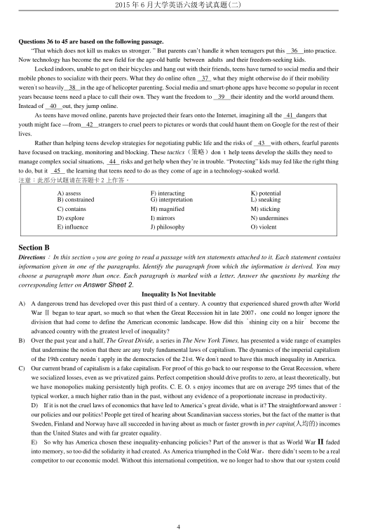

第 1 / 8 页

2015 年6 月大学英语六级考试真题(二)
1
2015 年6 月大学英语六级考试真题(二)
Part I
Writing
(30 minutes)
Directions：For this part, you are allowed 30 minutes to write an essay commenting on Albert Einsteins remark “I have
no special talents. I am only passionately curious. You can give an example or two to illustrate your point of view. You
should write at least 150 words but no more than 200 words.
注意：此部分试题请在答题卡1 上作答。
Part I
Listening Comprehension
(30 minutes)
Section A
Directions：In this section, you will hear 8 short conversations and 2 long conversations. At the end of each conversation,
one or more questions will be asked about what was said. Both the conversation and the questions will be spoken only
once. After each question there will be a pause. During the pause, you must read the four choices marked A), B), C) and
D), and decide which is the best answer. Then mark the corresponding letter on Answer Sheet 1 with a single line
through the centre.
注意：此部分试题请在答题卡1 上作答。
1.
A) The woman thinks she is cleverer than the man.
B)
The man behaves as if he were a thorough fool.
C)
The man is unhappy with the woman’s remark.
D)
The woman seldom speaks highly of herself.
2.
A) Three crew members were involved in the incident.
B)
None of the hijackers carried any deadly weapons.
C)
None of the passengers were injured or killed.
D)
The plane had been scheduled to fly to Japan.
3.
A)
At a travel agency.
C)
At a checkout counter.
B)
At a hotel front desk.
D)
At a commercial bank.
4.
A) Chinatown has got the best restaurants in the city.
B)
The critic thought highly of the Chinese restaurant.
C)
The restaurant places many ads in popular magazines.
D)
The restaurant was not up to the speakers5 expectations.
5.
A) Prof. Laurence is going into an active retirement.
B)
Prof. Laurence has stopped conducting seminars.
C)
The professor’s graduate seminar is well received.
D)
The professor will lead a quiet life after retirement.
6.
A) Assigning Leon to a new position.
C)
Arranging for Rodney’s visit tomorrow.
B)
Finding a replacement for Leon.
D)
Finding a solution to Rodney’s problem.
7.
A) Photography is one of Helen’s many hobbies.
B)
Helen asked the man to book a ticket for her.
C)
The photography exhibition will close tomorrow.
D)
Helen has been looking forward to the exhibition.
8.
A) The speakers share the same opinion.
B)
Steve knows how to motivate employees.
C)
The man has a better understanding of Steve.
D)
The woman is out of touch with the real world.
查看 / 复制本页文字
2015 年6 月大学英语六级考试真题(二) 1 2015 年6 月大学英语六级考试真题(二) Part I Writing (30 minutes) Directions：For this part, you are allowed 30 minutes to write an essay commenting on Albert Einsteins remark “I have no special talents. I am only passionately curious. You can give an example or two to illustrate your point of view. You should write at least 150 words but no more than 200 words. 注意：此部分试题请在答题卡1 上作答。 Part I Listening Comprehension (30 minutes) Section A Directions：In this section, you will hear 8 short conversations and 2 long conversations. At the end of each conversation, one or more questions will be asked about what was said. Both the conversation and the questions will be spoken only once. After each question there will be a pause. During the pause, you must read the four choices marked A), B), C) and D), and decide which is the best answer. Then mark the corresponding letter on Answer Sheet 1 with a single line through the centre. 注意：此部分试题请在答题卡1 上作答。 1. A) The woman thinks she is cleverer than the man. B) The man behaves as if he were a thorough fool. C) The man is unhappy with the woman’s remark. D) The woman seldom speaks highly of herself. 2. A) Three crew members were involved in the incident. B) None of the hijackers carried any deadly weapons. C) None of the passengers were injured or killed. D) The plane had been scheduled to fly to Japan. 3. A) At a travel agency. C) At a checkout counter. B) At a hotel front desk. D) At a commercial bank. 4. A) Chinatown has got the best restaurants in the city. B) The critic thought highly of the Chinese restaurant. C) The restaurant places many ads in popular magazines. D) The restaurant was not up to the speakers5 expectations. 5. A) Prof. Laurence is going into an active retirement. B) Prof. Laurence has stopped conducting seminars. C) The professor’s graduate seminar is well received. D) The professor will lead a quiet life after retirement. 6. A) Assigning Leon to a new position. C) Arranging for Rodney’s visit tomorrow. B) Finding a replacement for Leon. D) Finding a solution to Rodney’s problem. 7. A) Photography is one of Helen’s many hobbies. B) Helen asked the man to book a ticket for her. C) The photography exhibition will close tomorrow. D) Helen has been looking forward to the exhibition. 8. A) The speakers share the same opinion. B) Steve knows how to motivate employees. C) The man has a better understanding of Steve. D) The woman is out of touch with the real world.
第 2 / 8 页
2015 年6 月大学英语六级考试真题(二)
2
Questions 9 to 12 are based on the conversation you have just heard
9 . A) It is well paid.
C）It is demanding.
B) It is stimulating.
D) It is fairly secure
10. A) A quick promotion.
C) Moving expenses.
B) Free accommodation
D) A Lighter workload.
11. A) He has difficulty communicating with local people.
B) He has to spend a lot more traveling back and forth.
C) He has trouble adapting to the local weather.
D) He has to sign a long-term contract.
12. A) The woman will help the man make a choice.
B) The man is going to attend a job interview.
C) The man is in the process of job hunting.
D) The woman sympathizes with the man.
Questions 13 to 15 are based on the conversation you have just heard.
13. A) To inquire about the interest rates at the woman^ bank.
B) To inquire about the current financial market situation.
C) To see if he can find a job in the woman’s company.
D) To see if he can get a loan from the woman’s bank.
14.
A) Long-term investment.
C) Any high-interest deposit.
B) A three-month deposit.
D) Any high-yield investment.
15.
A) She treated him to a meal.
C) She offered him dining coupons.
B) She gave him loans at low rates.
D) She raised interest rates for him.
Section B
Directions：In this section 9 you will hear 3 short passages. At the end of each passage, you will hear some questions. Both
the passage and the questions will be spoken only once. After you hear a question，you must choose the best answer from
the four choices marked A), B), C) and D). Then mark the corresponding letter on Answer Sheet 1 with a single line
through the centre.
注意：此部分试题请在答题卡1 上作答。
Passage One
Questions 16 to 18 are based on the passage you have just heard.
16. A) Strict professional training.
C) A refined taste for artistic works.
B)
Years of practical experience.
D) The ability to predict fashion trends.
17.
A) Purchasing handicrafts from all over the world.
B)
Conducting trade in art works with dealers overseas.
C)
Strengthening cooperation with foreign governments.
D)
Promoting all kinds of American hand-made specialties.
18.
A)
She has access to fashionable things.
C)
She is doing what she enjoys doing.
B)
She can enjoy life on a modest salary.
D)
She is free to do whatever she wants.
Passage Two
Questions 19 to 22 are based on the passage you have just heard.
19. A) It is a Portuguese company selling coffee in New York.
B)
Its most important task is to conduct coffee studies.
C)
It represents several countries that export coffee.
查看 / 复制本页文字
2015 年6 月大学英语六级考试真题(二) 2 Questions 9 to 12 are based on the conversation you have just heard 9 . A) It is well paid. C）It is demanding. B) It is stimulating. D) It is fairly secure 10. A) A quick promotion. C) Moving expenses. B) Free accommodation D) A Lighter workload. 11. A) He has difficulty communicating with local people. B) He has to spend a lot more traveling back and forth. C) He has trouble adapting to the local weather. D) He has to sign a long-term contract. 12. A) The woman will help the man make a choice. B) The man is going to attend a job interview. C) The man is in the process of job hunting. D) The woman sympathizes with the man. Questions 13 to 15 are based on the conversation you have just heard. 13. A) To inquire about the interest rates at the woman^ bank. B) To inquire about the current financial market situation. C) To see if he can find a job in the woman’s company. D) To see if he can get a loan from the woman’s bank. 14. A) Long-term investment. C) Any high-interest deposit. B) A three-month deposit. D) Any high-yield investment. 15. A) She treated him to a meal. C) She offered him dining coupons. B) She gave him loans at low rates. D) She raised interest rates for him. Section B Directions：In this section 9 you will hear 3 short passages. At the end of each passage, you will hear some questions. Both the passage and the questions will be spoken only once. After you hear a question，you must choose the best answer from the four choices marked A), B), C) and D). Then mark the corresponding letter on Answer Sheet 1 with a single line through the centre. 注意：此部分试题请在答题卡1 上作答。 Passage One Questions 16 to 18 are based on the passage you have just heard. 16. A) Strict professional training. C) A refined taste for artistic works. B) Years of practical experience. D) The ability to predict fashion trends. 17. A) Purchasing handicrafts from all over the world. B) Conducting trade in art works with dealers overseas. C) Strengthening cooperation with foreign governments. D) Promoting all kinds of American hand-made specialties. 18. A) She has access to fashionable things. C) She is doing what she enjoys doing. B) She can enjoy life on a modest salary. D) She is free to do whatever she wants. Passage Two Questions 19 to 22 are based on the passage you have just heard. 19. A) It is a Portuguese company selling coffee in New York. B) Its most important task is to conduct coffee studies. C) It represents several countries that export coffee.
第 3 / 8 页
2015 年6 月大学英语六级考试真题(二)
3
D)
Its role is to regulate international coffee prices.
20. A) The freezing weather in Brazil.
C) The increased coffee consumption.
B)
The impact of global warming.
D) The fluctuation of coffee prices.
21.
A)
He is doing a bachelor’s degree.
C) He is a heavy coffee drinker.
B)
He is young, handsome and single.
D) He is tall, rich and intelligent.
22.
A) A visit to several coffee-growing plantations.
B)
Coffee prices and his advertising campaign.
C)
A vacation on some beautiful tropical beach.
D)
A quick promotion and a handsome income.
Passage Three
Questions 23 to 25 are based on the passage you have just heard.
23.
A) They were held up in a traffic jam.
C) They were late for the first morning bus.
B) They boarded a wrong coach in a hurry.
D) They were delayed by the train for hours.
24.
A) It was canceled because of an unexpected strike.
B)
It was the most exciting trip they ever had.
C)
It was spoiled by poor accommodations.
D)
It was postponed due to terrible weather.
25.
A) Go overseas.
C) Take romantic cruises.
B) Stay at home.
D) Take escorted trips.
Section C
Directions: In this section, you will hear a passage three times. When the passage is read for the first time, you should listen
carefully for its general idea. When the passage is read for the second time, you are required to fill in the blanks with the
exact words you have just heard. Finally, when the passage is read for the third time, you should check what you have
written.
注意：此部分试题请在答题卡1 上作答。
Why would an animal kill itself? It seems a strange question, and yet it is one that has 26
some people for a long time.
The lemming (旅鼠) is one such animal. Lemmings periodically commit mass 27 , and no one knows just why!
The small
28 , which inhabit the Scandinavian mountains, sustain themselves on a diet of roots and live in nests they
make underground. When their food supply is 29
large, the lemmings live a normal, undisturbed life.
However, when the lemmings' food supply becomes too low to support the population, a singular 30
commences.
The lemmings leave their nests all together at the same time, forming huge crowds. Great numbers of the lemmings begin a long
and hard journey across the Scandinavian plains, z journey that may last weeks. The lemmings eat everything in their path,
continuing their 31
march until they reach the sea.
The reason for what follows remains a mystery for zoologists and naturalists. Upon reaching the coast, the lemmings do
not stop but swim by the thousands into the surf. Most 32
only a short time before they tire, sink, and drown.
A common theory for this unusual phenomenon is that the lemmings do not realize that the ocean is such 33
water. In
their cross-country journey, the animals must traverse many smaller bodies of water, such as rivers and small lakes. They may
34
that the sea is just another such swimmable
35 . But no final answer has been found to the mystery.
Part Ⅱ
Reading Comprehension
(40 minutes)
Section A
Directions：In this section, there is a passage with ten blanks. You are required to select one word for each blank from a
list of choices given in a word bank following the passage. Read the passage through carefully before making your
choices. Each choice in the bank is identified by a letter. Please mark the corresponding letter for each item on Answer
Sheet 2 with a single line through the centre. You may not use any of the words in the bank more than once.
查看 / 复制本页文字
2015 年6 月大学英语六级考试真题(二) 3 D) Its role is to regulate international coffee prices. 20. A) The freezing weather in Brazil. C) The increased coffee consumption. B) The impact of global warming. D) The fluctuation of coffee prices. 21. A) He is doing a bachelor’s degree. C) He is a heavy coffee drinker. B) He is young, handsome and single. D) He is tall, rich and intelligent. 22. A) A visit to several coffee-growing plantations. B) Coffee prices and his advertising campaign. C) A vacation on some beautiful tropical beach. D) A quick promotion and a handsome income. Passage Three Questions 23 to 25 are based on the passage you have just heard. 23. A) They were held up in a traffic jam. C) They were late for the first morning bus. B) They boarded a wrong coach in a hurry. D) They were delayed by the train for hours. 24. A) It was canceled because of an unexpected strike. B) It was the most exciting trip they ever had. C) It was spoiled by poor accommodations. D) It was postponed due to terrible weather. 25. A) Go overseas. C) Take romantic cruises. B) Stay at home. D) Take escorted trips. Section C Directions: In this section, you will hear a passage three times. When the passage is read for the first time, you should listen carefully for its general idea. When the passage is read for the second time, you are required to fill in the blanks with the exact words you have just heard. Finally, when the passage is read for the third time, you should check what you have written. 注意：此部分试题请在答题卡1 上作答。 Why would an animal kill itself? It seems a strange question, and yet it is one that has 26 some people for a long time. The lemming (旅鼠) is one such animal. Lemmings periodically commit mass 27 , and no one knows just why! The small 28 , which inhabit the Scandinavian mountains, sustain themselves on a diet of roots and live in nests they make underground. When their food supply is 29 large, the lemmings live a normal, undisturbed life. However, when the lemmings' food supply becomes too low to support the population, a singular 30 commences. The lemmings leave their nests all together at the same time, forming huge crowds. Great numbers of the lemmings begin a long and hard journey across the Scandinavian plains, z journey that may last weeks. The lemmings eat everything in their path, continuing their 31 march until they reach the sea. The reason for what follows remains a mystery for zoologists and naturalists. Upon reaching the coast, the lemmings do not stop but swim by the thousands into the surf. Most 32 only a short time before they tire, sink, and drown. A common theory for this unusual phenomenon is that the lemmings do not realize that the ocean is such 33 water. In their cross-country journey, the animals must traverse many smaller bodies of water, such as rivers and small lakes. They may 34 that the sea is just another such swimmable 35 . But no final answer has been found to the mystery. Part Ⅱ Reading Comprehension (40 minutes) Section A Directions：In this section, there is a passage with ten blanks. You are required to select one word for each blank from a list of choices given in a word bank following the passage. Read the passage through carefully before making your choices. Each choice in the bank is identified by a letter. Please mark the corresponding letter for each item on Answer Sheet 2 with a single line through the centre. You may not use any of the words in the bank more than once.
第 4 / 8 页

2015 年6 月大学英语六级考试真题(二)
4
Questions 36 to 45 are based on the following passage.
“That which does not kill us makes us stronger. ” But parents can’t handle it when teenagers put this
36
into practice.
Now technology has become the new field for the age-old battle between adults and their freedom-seeking kids.
Locked indoors, unable to get on their bicycles and hang out with their friends, teens have turned to social media and their
mobile phones to socialize with their peers. What they do online often
37 what they might otherwise do if their mobility
weren’t so heavily
38
in the age of helicopter parenting. Social media and smart-phone apps have become so popular in recent
years because teens need a place to call their own. They want the freedom to
39
their identity and the world around them.
Instead of
40
out, they jump online.
As teens have moved online, parents have projected their fears onto the Internet, imagining all the 41 dangers that
youth might face —from
42
strangers to cruel peers to pictures or words that could haunt them on Google for the rest of their
lives.
Rather than helping teens develop strategies for negotiating public life and the risks of
43
with others, fearful parents
have focused on tracking, monitoring and blocking. These tactics（策略）don
‘t help teens develop the skills they need to
manage complex social situations,
44
risks and get help when they’re in trouble. “Protecting” kids may fed like the right thing
to do, but it
45
the learning that teens need to do as they come of age in a technology-soaked world.
注意：此部分试题请在答题卡2 上作答。
Section B
Directions：In this section 9 you are going to read a passage with ten statements attached to it. Each statement contains
information given in one of the paragraphs. Identify the paragraph from which the information is derived. You may
choose a paragraph more than once. Each paragraph is marked with a letter. Answer the questions by marking the
corresponding letter on Answer Sheet 2.
Inequality Is Not Inevitable
A)
A dangerous trend has developed over this past third of a century. A country that experienced shared growth after World
War Ⅱbegan to tear apart, so much so that when the Great Recession hit in late 2007，one could no longer ignore the
division that had come to define the American economic landscape. How did this
“shining city on a hiir
” become the
advanced country with the greatest level of inequality?
B)
Over the past year and a half, The Great Divide, a series in The New York Times, has presented a wide range of examples
that undermine the notion that there are any truly fundamental laws of capitalism. The dynamics of the imperial capitalism
of the 19th century needn’ t apply in the democracies of the 21st. We don’t need to have this much inequality in America.
C)
Our current brand of capitalism is a fake capitalism. For proof of this go back to our response to the Great Recession, where
we socialized losses, even as we privatized gains. Perfect competition should drive profits to zero, at least theoretically, but
we have monopolies making persistently high profits. C. E. O. s enjoy incomes that are on average 295 times that of the
typical worker, a much higher ratio than in the past, without any evidence of a proportionate increase in productivity.
D)
If it is not the cruel laws of economics that have led to America’s great divide, what is it? The straightforward answer：
our policies and our politics! People get tired of hearing about Scandinavian success stories, but the fact of the matter is that
Sweden, Finland and Norway have all succeeded in having about as much or faster growth in per capita(人均的) incomes
than the United States and with far greater equality.
E)
So why has America chosen these inequality-enhancing policies? Part of the answer is that as World War II faded
into memory, so too did the solidarity it had created. As America triumphed in the Cold War，there didn’t seem to be a real
competitor to our economic model. Without this international competition, we no longer had to show that our system could
A) assess
F) interacting
K) potential
B) constrained
G) interpretation
L) sneaking
C) contains
H) magnified
M) sticking
D) explore
I) mirrors
N) undermines
E) influence
J) philosophy
O) violent
查看 / 复制本页文字
2015 年6 月大学英语六级考试真题(二) 4 Questions 36 to 45 are based on the following passage. “That which does not kill us makes us stronger. ” But parents can’t handle it when teenagers put this 36 into practice. Now technology has become the new field for the age-old battle between adults and their freedom-seeking kids. Locked indoors, unable to get on their bicycles and hang out with their friends, teens have turned to social media and their mobile phones to socialize with their peers. What they do online often 37 what they might otherwise do if their mobility weren’t so heavily 38 in the age of helicopter parenting. Social media and smart-phone apps have become so popular in recent years because teens need a place to call their own. They want the freedom to 39 their identity and the world around them. Instead of 40 out, they jump online. As teens have moved online, parents have projected their fears onto the Internet, imagining all the 41 dangers that youth might face —from 42 strangers to cruel peers to pictures or words that could haunt them on Google for the rest of their lives. Rather than helping teens develop strategies for negotiating public life and the risks of 43 with others, fearful parents have focused on tracking, monitoring and blocking. These tactics（策略）don ‘t help teens develop the skills they need to manage complex social situations, 44 risks and get help when they’re in trouble. “Protecting” kids may fed like the right thing to do, but it 45 the learning that teens need to do as they come of age in a technology-soaked world. 注意：此部分试题请在答题卡2 上作答。 Section B Directions：In this section 9 you are going to read a passage with ten statements attached to it. Each statement contains information given in one of the paragraphs. Identify the paragraph from which the information is derived. You may choose a paragraph more than once. Each paragraph is marked with a letter. Answer the questions by marking the corresponding letter on Answer Sheet 2. Inequality Is Not Inevitable A) A dangerous trend has developed over this past third of a century. A country that experienced shared growth after World War Ⅱbegan to tear apart, so much so that when the Great Recession hit in late 2007，one could no longer ignore the division that had come to define the American economic landscape. How did this “shining city on a hiir ” become the advanced country with the greatest level of inequality? B) Over the past year and a half, The Great Divide, a series in The New York Times, has presented a wide range of examples that undermine the notion that there are any truly fundamental laws of capitalism. The dynamics of the imperial capitalism of the 19th century needn’ t apply in the democracies of the 21st. We don’t need to have this much inequality in America. C) Our current brand of capitalism is a fake capitalism. For proof of this go back to our response to the Great Recession, where we socialized losses, even as we privatized gains. Perfect competition should drive profits to zero, at least theoretically, but we have monopolies making persistently high profits. C. E. O. s enjoy incomes that are on average 295 times that of the typical worker, a much higher ratio than in the past, without any evidence of a proportionate increase in productivity. D) If it is not the cruel laws of economics that have led to America’s great divide, what is it? The straightforward answer： our policies and our politics! People get tired of hearing about Scandinavian success stories, but the fact of the matter is that Sweden, Finland and Norway have all succeeded in having about as much or faster growth in per capita(人均的) incomes than the United States and with far greater equality. E) So why has America chosen these inequality-enhancing policies? Part of the answer is that as World War II faded into memory, so too did the solidarity it had created. As America triumphed in the Cold War，there didn’t seem to be a real competitor to our economic model. Without this international competition, we no longer had to show that our system could A) assess F) interacting K) potential B) constrained G) interpretation L) sneaking C) contains H) magnified M) sticking D) explore I) mirrors N) undermines E) influence J) philosophy O) violent
第 5 / 8 页
2015 年6 月大学英语六级考试真题(二)
5
deliver for most of our citizens.
F)
Ideology and interests combined viciously. Some drew the wrong lesson from the collapse of the Soviet system in 1991.
The pendulum swung from much too much government there to much too little here. Corporate interests argued for getting
rid of regulations, even when those regulations had done so much to protect and improve our environment, our safety, our
health and the economy itself.
G)
But this ideology was hypocriticail(虚伪的）.The bankers, among the strongest advocates of laissez-faire (自由放任的）
economics, were only too willing to accept hundreds of billions of dollars from the government in the aid programs that
have been a recurring feature of the global economy since the beginning of the Thatcher-Reagan era of “free” markets and
deregulation.
H)
The American political system is overrun by money. Economic inequality translates into political inequality, and political
inequality yields increasing economic inequality. So corporate welfare increases as we reduce welfare for the poor.
Congress maintains subsidies for rich farmers as we cut back on nutritional support for the needy. Drug companies have
been given hundreds of billions of dollars as we limit Medicaid benefits. The banks that brought on the global financial
crisis got billions while a tiny bit went to the homeowners and victims of the same banks’ predatory (掠夺性的）lending
practices. This last decision was particularly foolish. There were alternatives to throwing money at the banks and hoping it
would circulate through increased lending.
I)
Our divisions are deep. Economic and geographic segregation has immunized those at the top from the problems of those
down below. Like the kings of ancient times, they have come to perceive their privileged positions essentially as a natural
right.
J)
Our economy, our democracy and our society have paid for these gross inequalities. The true test of an economy is not how
much wealth its princes can accumulate in tax havens (庇护所），but how well off the typical citizen is. But average
incomes are lower than they were a quarter-century ago. Growth has gone to the very, very top, whose share has almost
increased four times since 1980. Money that was meant to have trickled (流淌) down has instead evaporated in the
agreeable climate of the Cayman Islands.
K)
With almost a quarter of American children younger than 5 living in poverty, and with America doing so little for its poor,
the deprivations of one generation are being visited upon the next. Of course, no country has ever come close to providing
complete equality of opportunity. But why is America one of the advanced countries where the life prospects of the young
are most sharply determined by the income and education of their parents?
L)
Among most bitter stories in The Great Divide were those that portrayed the frustrations of the young, who long to enter
our shrinking middle class. Soaring tuitions and declining incomes have resulted in larger debt burdens. Those with only a
high school diploma have seen their incomes decline by 13 percent over the past 35 years.
M) Where justice is concerned, there is also a huge divide. In the eyes of the rest of the world and a significant part of its own
population, mass imprisonment has come to define America—a country, it bears repeating，with about 5 percent of the
world’s population but around a fourth of the world’s prisoners.
N)
Justice has become a commodity, affordable to only a few. While Wall Street executives used their expensive lawyers to
ensure that their ranks were not held accountable for the misdeeds that the crisis in 2008 so graphically revealed, the banks
abused our legal system to foreclose (取消赎回权）on mortgages and eject tenants, some of whom did not even owe
money.
O)
More than a half-century ago, America led the way in advocating for the Universal Declaration of Human Rights, adopted
by the United Nations in 1948. Today, access to health care is among the most universally accepted rights, at least in the
advanced countries. America, despite the implementation of the Affordable Care Act, is the exception. In the relief that
many felt when the Supreme Court did not overturn the Affordable Care Act, the implications of the decision for Medicaid
were not fully appreciated. Obamacare’s objective —to ensure that all Americans have access to health care—has been
blocked：24 states have not implemented the expanded Medicaid program, which was the means by which Obamacare was
supposed to deliver on its promise to some of the poorest.
P)
We need not just a new war on poverty but a war to protect the middle class. Solutions to these problems do not have to be
novel. Far from it. Making markets act like markets would be a good place to start. We must end the rent-seeking society
查看 / 复制本页文字
2015 年6 月大学英语六级考试真题(二) 5 deliver for most of our citizens. F) Ideology and interests combined viciously. Some drew the wrong lesson from the collapse of the Soviet system in 1991. The pendulum swung from much too much government there to much too little here. Corporate interests argued for getting rid of regulations, even when those regulations had done so much to protect and improve our environment, our safety, our health and the economy itself. G) But this ideology was hypocriticail(虚伪的）.The bankers, among the strongest advocates of laissez-faire (自由放任的） economics, were only too willing to accept hundreds of billions of dollars from the government in the aid programs that have been a recurring feature of the global economy since the beginning of the Thatcher-Reagan era of “free” markets and deregulation. H) The American political system is overrun by money. Economic inequality translates into political inequality, and political inequality yields increasing economic inequality. So corporate welfare increases as we reduce welfare for the poor. Congress maintains subsidies for rich farmers as we cut back on nutritional support for the needy. Drug companies have been given hundreds of billions of dollars as we limit Medicaid benefits. The banks that brought on the global financial crisis got billions while a tiny bit went to the homeowners and victims of the same banks’ predatory (掠夺性的）lending practices. This last decision was particularly foolish. There were alternatives to throwing money at the banks and hoping it would circulate through increased lending. I) Our divisions are deep. Economic and geographic segregation has immunized those at the top from the problems of those down below. Like the kings of ancient times, they have come to perceive their privileged positions essentially as a natural right. J) Our economy, our democracy and our society have paid for these gross inequalities. The true test of an economy is not how much wealth its princes can accumulate in tax havens (庇护所），but how well off the typical citizen is. But average incomes are lower than they were a quarter-century ago. Growth has gone to the very, very top, whose share has almost increased four times since 1980. Money that was meant to have trickled (流淌) down has instead evaporated in the agreeable climate of the Cayman Islands. K) With almost a quarter of American children younger than 5 living in poverty, and with America doing so little for its poor, the deprivations of one generation are being visited upon the next. Of course, no country has ever come close to providing complete equality of opportunity. But why is America one of the advanced countries where the life prospects of the young are most sharply determined by the income and education of their parents? L) Among most bitter stories in The Great Divide were those that portrayed the frustrations of the young, who long to enter our shrinking middle class. Soaring tuitions and declining incomes have resulted in larger debt burdens. Those with only a high school diploma have seen their incomes decline by 13 percent over the past 35 years. M) Where justice is concerned, there is also a huge divide. In the eyes of the rest of the world and a significant part of its own population, mass imprisonment has come to define America—a country, it bears repeating，with about 5 percent of the world’s population but around a fourth of the world’s prisoners. N) Justice has become a commodity, affordable to only a few. While Wall Street executives used their expensive lawyers to ensure that their ranks were not held accountable for the misdeeds that the crisis in 2008 so graphically revealed, the banks abused our legal system to foreclose (取消赎回权）on mortgages and eject tenants, some of whom did not even owe money. O) More than a half-century ago, America led the way in advocating for the Universal Declaration of Human Rights, adopted by the United Nations in 1948. Today, access to health care is among the most universally accepted rights, at least in the advanced countries. America, despite the implementation of the Affordable Care Act, is the exception. In the relief that many felt when the Supreme Court did not overturn the Affordable Care Act, the implications of the decision for Medicaid were not fully appreciated. Obamacare’s objective —to ensure that all Americans have access to health care—has been blocked：24 states have not implemented the expanded Medicaid program, which was the means by which Obamacare was supposed to deliver on its promise to some of the poorest. P) We need not just a new war on poverty but a war to protect the middle class. Solutions to these problems do not have to be novel. Far from it. Making markets act like markets would be a good place to start. We must end the rent-seeking society
第 6 / 8 页
2015 年6 月大学英语六级考试真题(二)
6
we have gravitated toward, in which the wealthy obtain profits by manipulating the system.
Q)
The problem of inequality is not so much a matter of technical economics. It’s really a problem of practical politics.
Inequality is not just about the top marginal tax rate but also about our children’s access to food and the right to justice for
all. If we spent more on education, health and infrastructure (基础设施），we would strengthen our economy, now and in
the future.
注意：此部分试题请在答题卡2 上作答。
46.
In theory, free competition is supposed to reduce the margin of profits to the minimum.
47.
The United States is now characterized by a great division between the rich and the poor.
48.
America lacked the incentive to care for the majority of its citizens as it found no rival for its economic model.
49.
The wealthy top have come to take privileges for granted.
50.
Many examples show the basic laws of imperial capitalism no longer apply in present-day America.
51.
The author suggests a return to the true spirit of the market.
52.
A quarter of the world’s prisoner population is in America.
53.
Government regulation in America went from one extreme to the other in the past two decades.
54.
Justice has become so expensive that only a small number of people like corporate executives can afford it.
55.
No country in the world so far has been able to provide completely equal opportunities for all.
Section C
Directions：There are 2 passages in this section. Each passage is followed by some questions or unfinished statements.
For each of them there are four choices marked A)，B)，C) and D). You should decide on the best choice and mark the
corresponding letter on Answer Sheet 2 with a single line through the centre. Passage One
Questions 56 to 60 are based on the following passage.
I’ll admit I’ve never quite understood the obsession (难以破除的成见）surrounding genetically modified (GM) crops. To
environmentalist opponents, GM foods are simply evil, an understudied, possibly harmful tool used by big agricultural
businesses to control global seed markets and crush local farmers. They argue that GM foods have never delivered on their
supposed promise, that money spent on GM crops would be better channeled to organic farming and that consumers should be
protected with warning labels on any products that contain genetically modified ingredients. To supporters, GM crops are a key
part of the effort to sustainably provide food to meet a growing global population. But more than that, supporters see the GM
opposition of many environmentalists as fundamentally anti-science, no different than those who question the basics of
man-made climate change.
For both sides, GM foods seem to act as a symbol：you’re pro-agricultural business or anti-science. But science is exactly
what we need more of when it comes to GM foods, which is why I was happy to see Nature devote a special series of articles to
the GM food controversy. The conclusion：while GM crops haven’t yet realized their initial promise and have been dominated
by agricultural businesses, there is reason to continue to use and develop them to help meet the enormous challenge of
sustainably feeding a growing planet.
That doesn’t mean GM crops are perfect, or a one-size-fits-all solution to global agriculture problems. But anything that
can increase farming efficiency —the amount of crops we can produce per acre of land— will be extremely useful. GM crops
can and almost certainly will be part of that suite of tools, but so will traditional plant breeding, improved soil and crop
management —and perhaps most important of all, better storage and transport infrastructure(基础设施), especially in the
developing world. (It doesn’t do much good for farmers in places like sub-Saharan Africa to produce more food if they can 't get
it to hungry consumers.) I 'd like to see more non-industry research done on GM crops—not just because we’d worry less about
bias，but also because seed companies like Monsanto and Pioneer shouldn’t be the only entities working to harness genetic
modification. Td like to see GM research on less commercial crops, like corn. I don’t think it’s vital to label GM ingredients in
food, but I also wouldn’t be against it —and industry would be smart to go along with labeling, just as a way of removing fears
about the technology.
Most of all, though, I wish a tenth of the energy that’s spent endlessly debating GM crops was focused on those more
pressing challenges for global agriculture. There are much bigger battles to fight.
查看 / 复制本页文字
2015 年6 月大学英语六级考试真题(二) 6 we have gravitated toward, in which the wealthy obtain profits by manipulating the system. Q) The problem of inequality is not so much a matter of technical economics. It’s really a problem of practical politics. Inequality is not just about the top marginal tax rate but also about our children’s access to food and the right to justice for all. If we spent more on education, health and infrastructure (基础设施），we would strengthen our economy, now and in the future. 注意：此部分试题请在答题卡2 上作答。 46. In theory, free competition is supposed to reduce the margin of profits to the minimum. 47. The United States is now characterized by a great division between the rich and the poor. 48. America lacked the incentive to care for the majority of its citizens as it found no rival for its economic model. 49. The wealthy top have come to take privileges for granted. 50. Many examples show the basic laws of imperial capitalism no longer apply in present-day America. 51. The author suggests a return to the true spirit of the market. 52. A quarter of the world’s prisoner population is in America. 53. Government regulation in America went from one extreme to the other in the past two decades. 54. Justice has become so expensive that only a small number of people like corporate executives can afford it. 55. No country in the world so far has been able to provide completely equal opportunities for all. Section C Directions：There are 2 passages in this section. Each passage is followed by some questions or unfinished statements. For each of them there are four choices marked A)，B)，C) and D). You should decide on the best choice and mark the corresponding letter on Answer Sheet 2 with a single line through the centre. Passage One Questions 56 to 60 are based on the following passage. I’ll admit I’ve never quite understood the obsession (难以破除的成见）surrounding genetically modified (GM) crops. To environmentalist opponents, GM foods are simply evil, an understudied, possibly harmful tool used by big agricultural businesses to control global seed markets and crush local farmers. They argue that GM foods have never delivered on their supposed promise, that money spent on GM crops would be better channeled to organic farming and that consumers should be protected with warning labels on any products that contain genetically modified ingredients. To supporters, GM crops are a key part of the effort to sustainably provide food to meet a growing global population. But more than that, supporters see the GM opposition of many environmentalists as fundamentally anti-science, no different than those who question the basics of man-made climate change. For both sides, GM foods seem to act as a symbol：you’re pro-agricultural business or anti-science. But science is exactly what we need more of when it comes to GM foods, which is why I was happy to see Nature devote a special series of articles to the GM food controversy. The conclusion：while GM crops haven’t yet realized their initial promise and have been dominated by agricultural businesses, there is reason to continue to use and develop them to help meet the enormous challenge of sustainably feeding a growing planet. That doesn’t mean GM crops are perfect, or a one-size-fits-all solution to global agriculture problems. But anything that can increase farming efficiency —the amount of crops we can produce per acre of land— will be extremely useful. GM crops can and almost certainly will be part of that suite of tools, but so will traditional plant breeding, improved soil and crop management —and perhaps most important of all, better storage and transport infrastructure(基础设施), especially in the developing world. (It doesn’t do much good for farmers in places like sub-Saharan Africa to produce more food if they can 't get it to hungry consumers.) I 'd like to see more non-industry research done on GM crops—not just because we’d worry less about bias，but also because seed companies like Monsanto and Pioneer shouldn’t be the only entities working to harness genetic modification. Td like to see GM research on less commercial crops, like corn. I don’t think it’s vital to label GM ingredients in food, but I also wouldn’t be against it —and industry would be smart to go along with labeling, just as a way of removing fears about the technology. Most of all, though, I wish a tenth of the energy that’s spent endlessly debating GM crops was focused on those more pressing challenges for global agriculture. There are much bigger battles to fight.
第 7 / 8 页
2015 年6 月大学英语六级考试真题(二)
7
注意：此部分试题请在答题卡2 上作答。
56. How do environmentalist opponents view GM foods according to the passage?
A)
They will eventually ruin agriculture and the environment.
B)
They are used by big businesses to monopolize agriculture.
C)
They have proved potentially harmful to consumers’ health.
D)
They pose a tremendous threat to current farming practice.
57. What does the author say is vital to solving the controversy between the two sides of the debate?
A)
Breaking the GM food monopoly.
C) Regulating GM food production.
B)
More friendly exchange of ideas.
D) More scientific research on GM crops.
58. What is the main point of the Nature articles?
A)
Feeding the growing population makes it imperative to develop GM crops.
B)
Popularizing GM technology will help it to live up to its initial promises.
C)
Measures should be taken to ensure the safety of GM foods.
D)
Both supporters and opponents should make compromises.
59. What is the author’s view on the solution to agricultural problems?
A)
It has to depend more and more on GM technology.
B)
It is vital to the sustainable development of human society.
C)
GM crops should be allowed until better alternatives are found.
D)
Whatever is useful to boost farming efficiency should be encouraged.
60. What does the author think of the ongoing debate around GM crops?
A)
It arises out of ignorance of and prejudice against new science.
B)
It distracts the public attention from other key issues of the world.
C)
Efforts spent on it should be turned to more urgent issues of agriculture.
D)
Neither side is likely to give in until more convincing evidence is found.
Passage Two
Questions 61 to 65 are based on the following passage.
Early decision—you apply to one school? and admission is binding—seems like a great choice for nervous applicants.
Schools let in a higher percentage of early-decision applicants, which arguably means that you have a better chance of getting in.
And if you do, you’re done with the whole agonizing process by December. But what most students and parents don’t realize is
that schools have hidden motives for offering early decision.
Early decision, since it’s binding, allows schools to fill their classes with qualified students ；it allows admissions
committees to select the students that are in particular demand for their college and know those students will come. It also gives
schools a higher yield rate, which is often used as one of the ways to measure college selectivity and popularity.
The problem is that this process effectively shortens the window of time students have to make one of the most important
decisions of their lives up to that point. Under regular admissions, seniors have until May 1 to choose which school to attend；
early decision effectively steals six months from them, months that could be used to visit more schools, do more research, speak
to current students and alumni(校友) and arguably make a more informed decision.
There are, frankly, an astonishing number of exceptional colleges in America, and for any given student, there are a
number of schools that are a great fit. When students become too fixated（专注）on a particular school early in the admissions
process, that fixation can lead to severe disappointment if they don’t get in or, if they do? the possibility that they are now bound
to go to a school that, given time for further reflection, may not actually be right for them.
Insofar as early decision offers a genuine admissions edge, that advantage goes largely to students who already have
numerous advantages. The students who use early decision tend to be those who have received higher-quality college guidance,
usually a result of coming from a more privileged background. In this regard，there’s an argument against early decision，as
students from lower-income families are far less likely to have the admissions know-how to navigate the often confusing early
deadlines.
Students who have done their research and are confident that there’s one school they would be thrilled to get into should,
查看 / 复制本页文字
2015 年6 月大学英语六级考试真题(二) 7 注意：此部分试题请在答题卡2 上作答。 56. How do environmentalist opponents view GM foods according to the passage? A) They will eventually ruin agriculture and the environment. B) They are used by big businesses to monopolize agriculture. C) They have proved potentially harmful to consumers’ health. D) They pose a tremendous threat to current farming practice. 57. What does the author say is vital to solving the controversy between the two sides of the debate? A) Breaking the GM food monopoly. C) Regulating GM food production. B) More friendly exchange of ideas. D) More scientific research on GM crops. 58. What is the main point of the Nature articles? A) Feeding the growing population makes it imperative to develop GM crops. B) Popularizing GM technology will help it to live up to its initial promises. C) Measures should be taken to ensure the safety of GM foods. D) Both supporters and opponents should make compromises. 59. What is the author’s view on the solution to agricultural problems? A) It has to depend more and more on GM technology. B) It is vital to the sustainable development of human society. C) GM crops should be allowed until better alternatives are found. D) Whatever is useful to boost farming efficiency should be encouraged. 60. What does the author think of the ongoing debate around GM crops? A) It arises out of ignorance of and prejudice against new science. B) It distracts the public attention from other key issues of the world. C) Efforts spent on it should be turned to more urgent issues of agriculture. D) Neither side is likely to give in until more convincing evidence is found. Passage Two Questions 61 to 65 are based on the following passage. Early decision—you apply to one school? and admission is binding—seems like a great choice for nervous applicants. Schools let in a higher percentage of early-decision applicants, which arguably means that you have a better chance of getting in. And if you do, you’re done with the whole agonizing process by December. But what most students and parents don’t realize is that schools have hidden motives for offering early decision. Early decision, since it’s binding, allows schools to fill their classes with qualified students ；it allows admissions committees to select the students that are in particular demand for their college and know those students will come. It also gives schools a higher yield rate, which is often used as one of the ways to measure college selectivity and popularity. The problem is that this process effectively shortens the window of time students have to make one of the most important decisions of their lives up to that point. Under regular admissions, seniors have until May 1 to choose which school to attend； early decision effectively steals six months from them, months that could be used to visit more schools, do more research, speak to current students and alumni(校友) and arguably make a more informed decision. There are, frankly, an astonishing number of exceptional colleges in America, and for any given student, there are a number of schools that are a great fit. When students become too fixated（专注）on a particular school early in the admissions process, that fixation can lead to severe disappointment if they don’t get in or, if they do? the possibility that they are now bound to go to a school that, given time for further reflection, may not actually be right for them. Insofar as early decision offers a genuine admissions edge, that advantage goes largely to students who already have numerous advantages. The students who use early decision tend to be those who have received higher-quality college guidance, usually a result of coming from a more privileged background. In this regard，there’s an argument against early decision，as students from lower-income families are far less likely to have the admissions know-how to navigate the often confusing early deadlines. Students who have done their research and are confident that there’s one school they would be thrilled to get into should,
第 8 / 8 页
2015 年6 月大学英语六级考试真题(二)
8
under the current system, probably apply under early decision. But for students who haven’t yet done enough research, or who
are still constantly changing their minds on favorite schools, the early-decision system needlessly and prematurely narrows the
field of possibility just at a time when students should be opening themselves to a whole range of thrilling options.
注意：此部分试题请在答题卡2 上作答。
61. What are students obliged to do under early decision?
A)
Look into a lot of schools before they apply.
B)
Attend the school once they are admitted.
C)
Think twice before they accept the offer.
D)
Consult the current students and alumni.
62. Why do schools offer early decision?
A)
To make sure they get qualified students.
B)
To avoid competition with other colleges.
C)
To provide more opportunities for applicants.
D)
To save students the agony of choosing a school.
63. What is said to be the problem with early decision for students?
A)
It makes their application process more complicated.
B)
It places too high a demand on their research ability.
C)
It allows them little time to make informed decisions.
D)
It exerts much more psychological pressure on them.
64. Why are some people opposed to early decision?
A)
It interferes with students’ learning in high school.
B)
It is biased against students at ordinary high schools.
C)
It causes unnecessary confusion among college applicants.
D)
It places students from lower-income families at a disadvantage.
65. What does the author advise college applicants to do?
A)
Refrain from competing with students from privileged families.
B)
Avoid choosing early decision unless they are fully prepared.
C)
Find sufficient information about their favorite schools.
D)
Look beyond the few supposedly thrilling options.
Part F
Translation
(30 minutes)
Directions：For this part, you are allowed 30 minutes to translate a passage from Chinese into English. You should write
your answer on Answer Sheet 2.
2011 年是中国城市化(urbanization)进程中的历史性时刻，其城市人口首次超过农村人口。在未来20 年里，预
计约有3.5 亿农村人口将移居到城市。如此规模的城市发展对城市交通来说既是挑战，也是机遇。中国政府一直提倡
“以人为本”的发展理念，强调人们以公交而不是私家车出行。它还号召建设“资源节约和环境友好型”社会。有
了这个明确的目标，中国城市就可以更好地规划其发展，并把大量投资转向安全、清洁和经济型交通系统的发展上。
注意：此部分试题请在答题卡2 上作答。
查看 / 复制本页文字
2015 年6 月大学英语六级考试真题(二) 8 under the current system, probably apply under early decision. But for students who haven’t yet done enough research, or who are still constantly changing their minds on favorite schools, the early-decision system needlessly and prematurely narrows the field of possibility just at a time when students should be opening themselves to a whole range of thrilling options. 注意：此部分试题请在答题卡2 上作答。 61. What are students obliged to do under early decision? A) Look into a lot of schools before they apply. B) Attend the school once they are admitted. C) Think twice before they accept the offer. D) Consult the current students and alumni. 62. Why do schools offer early decision? A) To make sure they get qualified students. B) To avoid competition with other colleges. C) To provide more opportunities for applicants. D) To save students the agony of choosing a school. 63. What is said to be the problem with early decision for students? A) It makes their application process more complicated. B) It places too high a demand on their research ability. C) It allows them little time to make informed decisions. D) It exerts much more psychological pressure on them. 64. Why are some people opposed to early decision? A) It interferes with students’ learning in high school. B) It is biased against students at ordinary high schools. C) It causes unnecessary confusion among college applicants. D) It places students from lower-income families at a disadvantage. 65. What does the author advise college applicants to do? A) Refrain from competing with students from privileged families. B) Avoid choosing early decision unless they are fully prepared. C) Find sufficient information about their favorite schools. D) Look beyond the few supposedly thrilling options. Part F Translation (30 minutes) Directions：For this part, you are allowed 30 minutes to translate a passage from Chinese into English. You should write your answer on Answer Sheet 2. 2011 年是中国城市化(urbanization)进程中的历史性时刻，其城市人口首次超过农村人口。在未来20 年里，预 计约有3.5 亿农村人口将移居到城市。如此规模的城市发展对城市交通来说既是挑战，也是机遇。中国政府一直提倡 “以人为本”的发展理念，强调人们以公交而不是私家车出行。它还号召建设“资源节约和环境友好型”社会。有 了这个明确的目标，中国城市就可以更好地规划其发展，并把大量投资转向安全、清洁和经济型交通系统的发展上。 注意：此部分试题请在答题卡2 上作答。